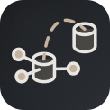

Выберите версию
Выберите тег релиза или ветку dev.

SERVEHUB-2 / INSTALLER
Установщик поможет выбрать версию проекта, подготовить конфигурацию и запустить развёртывание на ваших серверах. Перед применением изменений вы сможете проверить выбранные параметры.
Выберите тег релиза или ветку dev.
Проверьте secrets.yml и просмотрите параметры перед сохранением.
Проверка окружения и этапы Ansible доступны в одном интерфейсе.
Сначала выбор версии и проверка системы. Деплой не запускается автоматически.
Выберите каталог и версию ServeHub-2. Если найдена полная проверенная установка, установщик автоматически использует её без повторной загрузки. Если репозиторий не найден, будет установлена выбранная версия.
Разделы параметров можно сворачивать и раскрывать. При сохранении неиспользуемые поля выбранного способа bootstrap удаляются из secrets.yml; остальные параметры, вложенные настройки и комментарии сохраняются.
Ниже представлен итоговый файл. Вы можете пролистать и проверить его.
Обнаружен старый формат внутреннего пароля Redis. После подтверждения установщик заменит его безопасным автоматически сгенерированным значением. При применении локального деплоя Redis и Nextcloud получат согласованную конфигурацию.
ВНИМАНИЕ: YAML содержит пароли, токены, API-ключи и приватный SSH-ключ в открытом виде. Перед продолжением сохраните резервную копию. Не публикуйте файл, не отправляйте третьим лицам и не оставляйте копии в общедоступных каталогах.
Выберите конфигурацию деплоя Ansible в соответствии с вашей инфраструктурой.